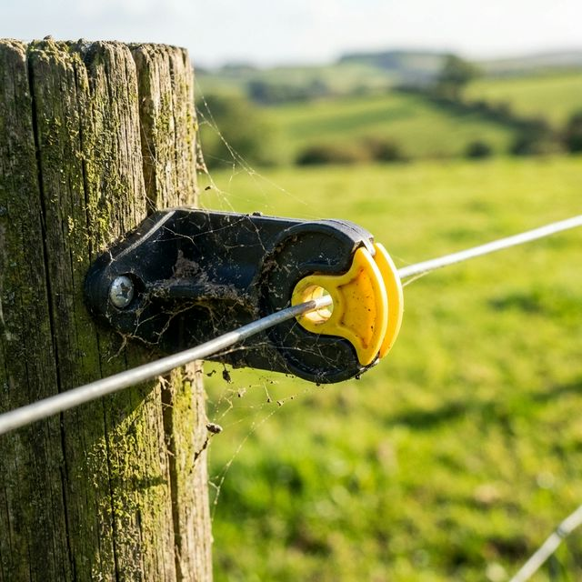

Entender as diferenças técnicas entre isoladores de uso rural e industrial é essencial para garantir o sucesso e a durabilidade do seu projeto de cercamento ou isolamento elétrico.
Os isoladores voltados para o campo, como os famosos isoladores tipo "W", Castanha ou Roldana, são projetados para suportar intempéries extremas. Eles possuem aditivos anti-UV que impedem o ressecamento rápido sob o sol forte. Além disso, o design focada em cercas elétricas para gado prioriza a resistência à tração e o rápido escoamento da água da chuva.
No ambiente fabril, os isoladores muitas vezes operam em ambientes controlados, porém submetidos a altíssimas tensões ou proximidade com produtos químicos e vapores corrosivos. O material utilizado frequentemente é diferente, buscando estabilidade dimensional e resistência térmica (como o PEEK pu UHMW ou poliamidas especiais com fibra de vidro).
Dica CNI: Para o produtor rural, invista sempre em isoladores com proteção UV verificada. A economia inicial em plásticos de baixa qualidade resulta na necessidade de repor cercas em poucos meses.
Na CNI Plásticos, atendemos as duas pontas da cadeia com processos de injeção plástica extremamente controlados. A precisão assegura que não ocorra perda de choque ou fugas de corrente, essencial para o manejo do seu gado ou a segurança da sua fábrica.
Fazer Cotação de Isoladores